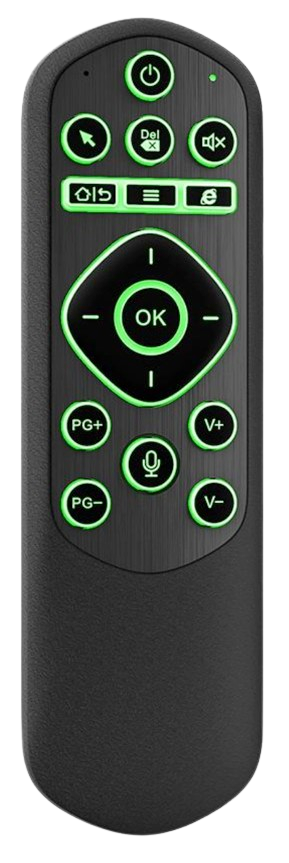
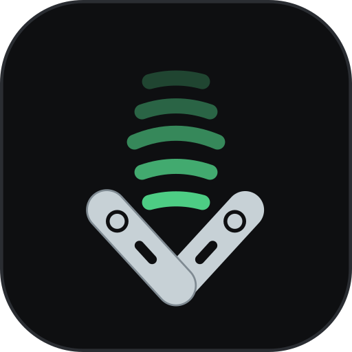
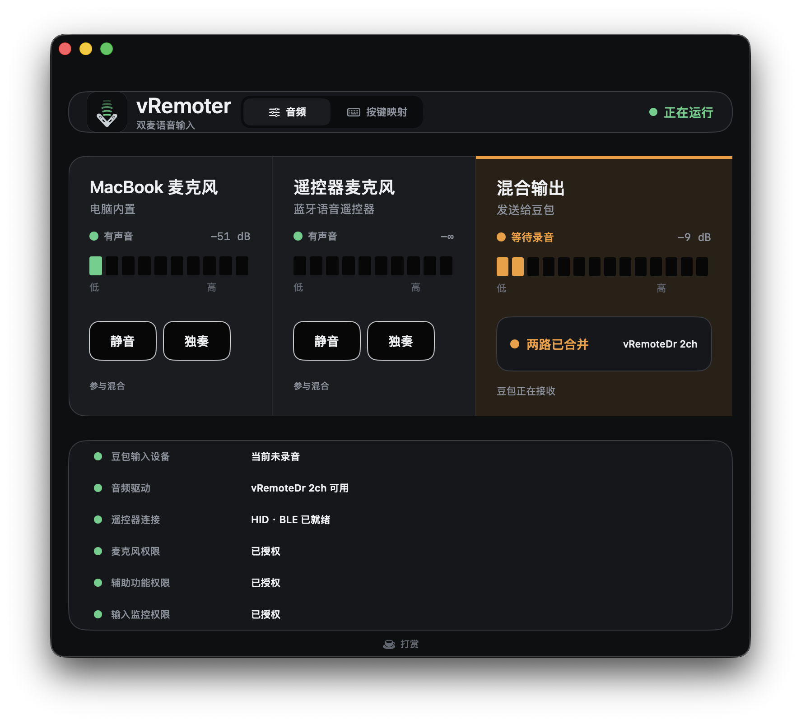
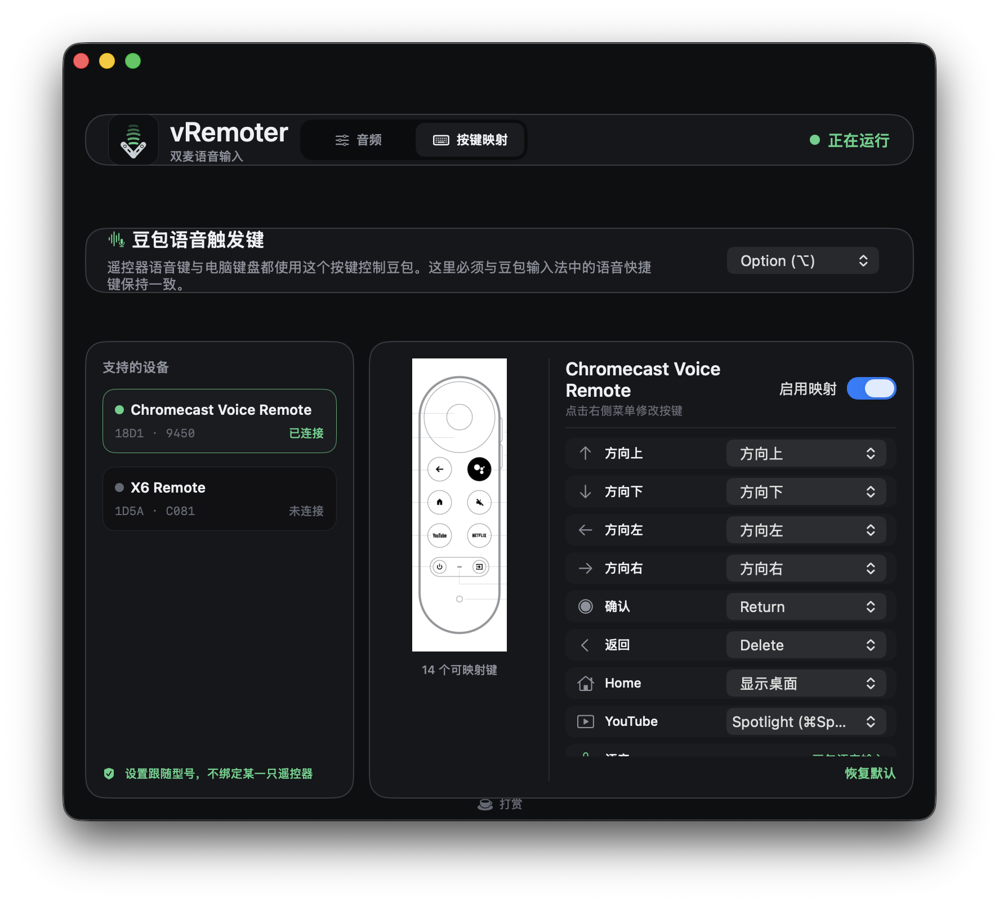
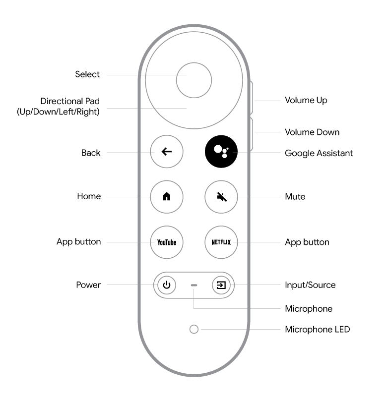
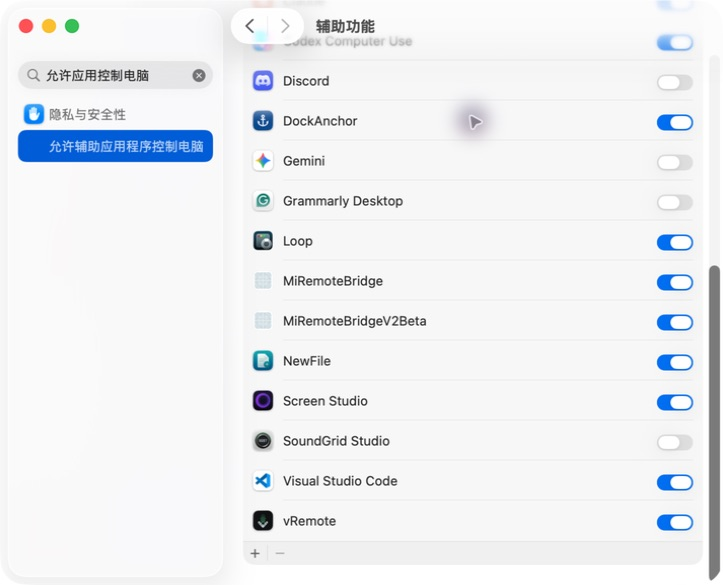
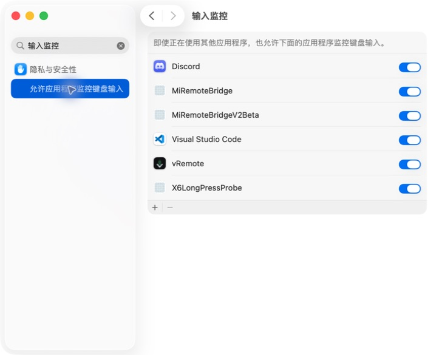
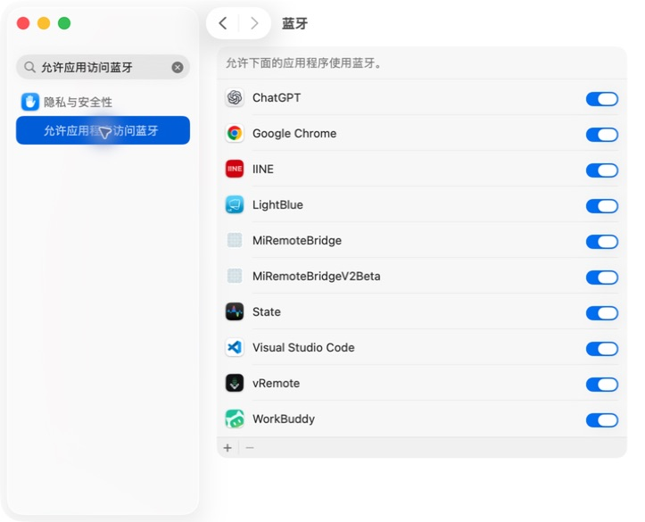

X6 Remote
VID 1D5A · PID C081
语音、正面按键、背面键盘与鼠标透传
vRemotervRemoter 1.1.1 · macOS
用 X6 或 Chromecast Voice Remote 控制豆包语音输入，把遥控器麦克风与 MacBook 麦克风混合起来，再把电视按键映射成真正有用的 Mac 操作。
适用于 macOS 12 及以上版本。当前针对豆包输入法。

1.1.0 新功能
方向、确认、返回、Home、YouTube、Netflix、信源、音量等按键都可以按型号配置。映射启用时，vRemoter 会拦截原始动作，只发送你选择的新操作。

已验证型号
X6 与 Chromecast Voice Remote 可以同时连接。支持按型号识别，不绑定你手上的某一只实体设备。

VID 1D5A · PID C081
语音、正面按键、背面键盘与鼠标透传
VID 18D1 · PID 9450
短按切换、长按说话与完整按键映射支持范围以这里列出的 VID/PID 为准，不代表所有 Chromecast 遥控器型号。X6 鼠标模式切换键由设备固件内部处理。
双麦语音输入
vRemoter 把遥控器和 MacBook 麦克风混合成豆包可识别的 vRemoteDr 2ch。语音触发键默认使用 Option，也可以改为 Command、Control、Shift 或 Fn。
第一次打开，第二次关闭。
按住期间录音，松开结束。
电脑按键与遥控器可以互相开启和关闭。
首次设置
权限未完成时，APP 会显示处理入口，并直接打开准确的 macOS 设置位置。豆包输入设备也有独立向导。





支持开发